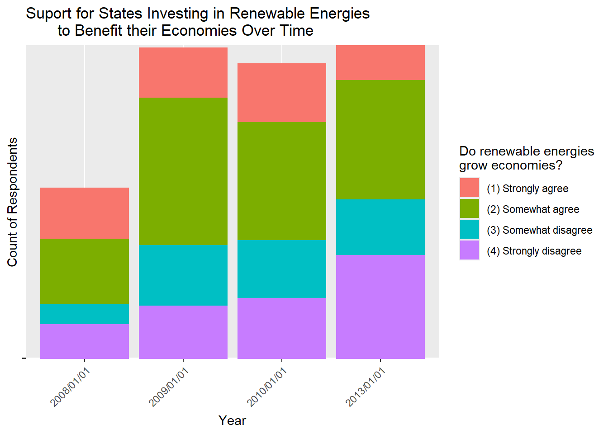

#Install Packages
library(polite)
library(rvest)
library(tibble)
library(tidyverse)
library(dplyr)EDA
Exploring the Data
What are your outcome variables?
- STATE_RPS_ECONOMY
- State governments will boost their economies by requiring greater use of renewable energy
- INTL_ECONOMICIMPACT
- Overall, the U.S. economy would benefit from leaving the international climate treaty designed to reduce greenhouse gas emissions
- CARBONTAX
- Support for a tax on carbon production
How well does it measure the outcome you are interested in?
All three outcome variables in our analysis have a strong correlation with our primary measure of interest—individuals’ beliefs about how climate policy impacts the economy. Each variable captures a slightly different aspect of this relationship. STATE_RPS_ECONOMY (our primary outcome variable) directly assesses whether individuals believe that requiring greater use of renewable energy will boost the economy, essentially measuring perceptions of climate policy. The CARBONTAX variations reflect people’s willingness to pay for greenhouse gas emission reductions, offering insight into how they weigh personal economic interests against broader climate concerns. INTL_ECONOMICIMPACT clearly indicates individuals’ views on the interaction between U.S. economic performance and climate change policy.
How does it realte to your expectations
Our graphs have shown results fairly consistent with our expectations, with respondents being more likely to support higher taxation to reduce climate emissions if they believe more strongly in climate change, being more likely to view Climate treaties as beneficial to the economy if they believe that climate change is an urgent issue, more liberal leaning individuals believing the economy will benefit from greater use of renewable energy. We expected that individuals who thought economic risk was low for climate policy would have higher levels of belief in climate change, and that has seemed to be the case thus far. In addition to our main assumptions, we also wanted to look at economic views of climate change over time, and we found that people were less likely to support climate change measures as time went on.
What are your key explanatory variables?
- GW_BELIEF
- Is there solid evidence average temp on earth has been warming in past 4 decades?
- GW_CONCERN
- How concerned are you about the issue of global warming
- BELIEVER_IMMEDIACY
- Does global warming require immediate government action
- WAVE_NUMBER
- Year survey was taken
- GOVT_EFFECTIVENESS
- How effective can governments be at preventing global warming from happening
- GOVT_FED
- How much responsibility federal government has for taking actions to reduce global warming
- STATE_VEHICLES
- State governments should require auto makers to increase the fuel efficiency of their vehicles even if it increases the cost of the vehicle.
- STATE_NEIGHBORSACT
- My state should not adopt anti-global warming policies unless its neighboring states also adopt similar policies.
- GASTAX_GOVT
- Which level of government should increase gas tax
- FFTAX_GOVT
- Which level of government should increase taxes on fossil fuels
- CAPTRADE_GOVT_V1
- Which level of government should use cap & trade
- GOVT_EFFECTIVENESS_V2
- Can governments be effective at preventing climate change
- GOVT_EFFECTIVENESS
- How effective can governments be at preventing global warming from happening
- STATE_RPS
- First, State governments should require a set portion of all electricity to come from renewable energy sources such as wind and solar power.
- DEMOG_EDU
- Highest level of education
- DEMOG_POLVIEWS
- Political beliefs: conservative to liberal
- DEMOG_RELIG
- Religious affiliation
#Loading the dataset
load("../data/36368-0001-Data.rda")
econ_clim_data <- as.data.frame(da36368.0001)#Creating a dataframe with only our necessary variables
working_dataset <- econ_clim_data %>%
select("WAVE_NUMBER", "INTL_ECONOMICIMPACT", "STATE_VEHICLES_V1",
"STATE_VEHICLES_V2", "CARBONTAX_COST10PCT", "CARBONTAX_COST15DOL",
"CARBONTAX_COST50DOL", "STATE_RPS_ECONOMY", "GW_BELIEF",
"GW_CONCERN", "BELIEVER_IMMEDIACY", "GOVT_EFFECTIVENESS", "GOVT_FED",
"STATE_NEIGHBORSACT", "GASTAX_GOVT", "FFTAX_GOVT",
"CAPTRADE_GOVT_V1", "GOVT_EFFECTIVENESS_V2", "GOVT_EFFECTIVENESS",
"STATE_RPS_V1", "STATE_RPS_V2", "STATE_RPS_V2_COST100",
"STATE_RPS_V3", "STATE_RPS_V3_COST25", "STATE_RPS_V3_COST50",
"DEMOG_EDU", "DEMOG_POLVIEWS", "DEMOG_RELIG")#Summary Table for our dataset
summary_table <- summary(working_dataset) WAVE_NUMBER INTL_ECONOMICIMPACT
(02) Fall 2009: 988 (1) Strongly agree : 170
(10) Fall 2013: 947 (2) Somewhat agree : 154
(12) Fall 2014: 942 (3) Somewhat disagree: 129
(16) Fall 2016: 940 (4) Strongly disagree: 313
(18) Fall 2017: 929 NA's :14370
(08) Fall 2012: 917
(Other) :9473
STATE_VEHICLES_V1 STATE_VEHICLES_V2
(1) Strongly support: 1003 (1) Strongly support: 218
(2) Somewhat support: 816 (2) Somewhat support: 167
(3) Somewhat oppose : 240 (3) Somewhat oppose : 63
(4) Strongly oppose : 329 (4) Strongly oppose : 105
NA's :12748 NA's :14583
CARBONTAX_COST10PCT CARBONTAX_COST15DOL
(1) Strongly support: 269 (1) Strongly support: 328
(2) Somewhat support: 398 (2) Somewhat support: 711
(3) Somewhat oppose : 286 (3) Somewhat oppose : 573
(4) Strongly oppose : 712 (4) Strongly oppose : 1059
NA's :13471 NA's :12465
CARBONTAX_COST50DOL STATE_RPS_ECONOMY GW_BELIEF
(1) Strongly support: 129 (1) Strongly agree : 1072 (1) Yes:9568
(2) Somewhat support: 242 (2) Somewhat agree : 1238 (2) No :3652
(3) Somewhat oppose : 382 (3) Somewhat disagree: 355 NA's :1916
(4) Strongly oppose : 1011 (4) Strongly disagree: 348
NA's :13372 NA's :12123
GW_CONCERN BELIEVER_IMMEDIACY
(01) Very concerned : 1851 (1) Yes: 1954
(02) Somewhat concerned : 1466 (2) No : 646
(03) Not too concerned : 518 NA's :12536
(04) Not concerned at all: 243
(98) Not sure : 6
NA's :11052
GOVT_EFFECTIVENESS
(1) Very effective : 105
(2) Somewhat effective : 308
(3) Not too effective : 177
(4) Not effective at all : 227
(5) Global warming not happening (volunteered): 91
NA's :14228
GOVT_FED STATE_NEIGHBORSACT
(1) A great deal of responsibility: 2564 (1) Strongly agree : 531
(2) Some responsibility : 1511 (2) Somewhat agree : 909
(3) No responsibility : 957 (3) Somewhat disagree: 1004
NA's :10104 (4) Strongly disagree: 1471
NA's :11221
GASTAX_GOVT FFTAX_GOVT CAPTRADE_GOVT_V1
(1) Federal: 146 (1) Federal: 207 (1) Federal: 222
(2) State : 146 (2) State : 128 (2) State : 182
(3) Both : 515 (3) Both : 633 (3) Both : 785
(4) Neither: 942 (4) Neither: 744 (4) Neither: 442
NA's :13387 NA's :13424 NA's :13505
GOVT_EFFECTIVENESS_V2 STATE_RPS_V1
(1) Yes: 432 (1) Strongly support: 701
(2) No : 177 (2) Somewhat support: 421
NA's :14527 (3) Somewhat oppose : 67
(4) Strongly oppose : 205
NA's :13742
STATE_RPS_V2 STATE_RPS_V2_COST100
(1) Strongly support: 1180 (1) Strongly support: 78
(2) Somewhat support: 704 (2) Somewhat support: 124
(3) Somewhat oppose : 164 (3) Somewhat oppose : 56
(4) Strongly oppose : 242 (4) Strongly oppose : 180
NA's :12846 NA's :14698
STATE_RPS_V3 STATE_RPS_V3_COST25
(1) Strongly agree : 307 (1) Strongly agree : 200
(2) Somewhat agree : 205 (2) Somewhat agree : 222
(3) Somewhat disagree: 56 (3) Somewhat disagree: 120
(4) Strongly disagree: 134 (4) Strongly disagree: 178
NA's :14434 NA's :14416
STATE_RPS_V3_COST50 DEMOG_EDU
(1) Strongly agree : 158 (1) Less than high school graduate : 475
(2) Somewhat agree : 173 (2) High school graduate :3463
(3) Somewhat disagree: 126 (3) Some college or technical school:4010
(4) Strongly disagree: 261 (4) College graduate :4326
NA's :14418 (5) Graduate or professional degree :2605
NA's : 257
DEMOG_POLVIEWS DEMOG_RELIG
(1) Very conservative :2058 (1) Protestant:6055
(2) Somewhat conservative:2663 (2) Catholic :3661
(3) Moderate :3865 (6) Other :2936
(4) Somewhat liberal :1878 (7) Atheist : 519
(5) Very liberal :1085 (3) Jewish : 350
NA's :3587 (Other) : 214
NA's :1401 Data Wrangling and Transformation
What data cleaning did you have to do?
The majority of the data cleaning entailed removing NA values (there were a lot since not all questions were asked each year), as well as Not Sure or Refused to answer (Since they don’t provide any information into how the respondent stands on economic or climate based issues).
How did you wrangle the data?
For the Economic Impact Perception vs. Belief in Climate Immediacy graph, we had to convert the variable INTL_ECONOMICIMPACT from String responses to numerical responses in order to take an average value of the responses for the different BELIEVER_IMMEDIACY values.
We simplified WAVE_NUMBER into just the year that the surveys were taken and converted them into Date data types for ease of graphing. January 1st was given as an arbitrary date and does not represent the true date that the surveys were taken.
For the Year vs. State Economy graph, we had to remove N/A observations and that left us with only the four years that asked that question.
Are you deciding to exclude any observations? If so, why?
For different graphs we had to exclude years that a given question was not asked since the only data provided in such cases was “NA”. However, we did not exclude any row based observations - as an observation is the responses from one individual, and choosing to exclude their responses would bias the data.
Did you have to create any new variables from existing variables? If so, how and why?
We did not create any new variables.
Graphs
# count instances unique values in STATE_ECO and
# save it to a new data structure to graph easier
eco_by_polview <- as.data.frame(table(working_dataset$DEMOG_POLVIEWS,
working_dataset$STATE_RPS_ECONOMY))
colnames(eco_by_polview) <- c("POLVIEWS", "STATE_ECO", "Count")
eco_by_polview <- eco_by_polview %>%
spread(key = STATE_ECO, value = Count, fill = 0)
eco_by_polview <- eco_by_polview %>%
pivot_longer(cols = c("(1) Strongly agree", "(2) Somewhat agree",
"(3) Somewhat disagree", "(4) Strongly disagree"),
names_to = "STATE_ECO",
values_to = "Count")
polviews_state_eco <- eco_by_polview %>%
ggplot(aes(x=POLVIEWS,
y=Count,
fill = STATE_ECO)) +
geom_bar(stat = "identity", position = "dodge") +
theme(axis.text.x = element_text(angle = 45, vjust = 1, hjust=1)) +
labs(x="Political Views",
y="Count of Respondents",
title = "Suport for States Investing in Renewable Energies
to Benefit their Economies") +
guides(fill=guide_legend(title="Do renewable energies
grow economies?"))
This graph shows the level of support respondents of varying political ideologies have for states investing in renewable energies based on perceived economic results.
# remove everything but year info from WAVE_NUMBER
working_dataset <- working_dataset %>%
mutate(WAVE_NUMBER = (sub('.*(?=.....$)', '', WAVE_NUMBER, perl=T)) %>%
paste("/01/01", sep="")
)# new dataframe with only observations
# that answered the STATE_RPS_ECONOMY question
date_intl_graph <- working_dataset[working_dataset$STATE_RPS_ECONOMY %in%
c("(1) Strongly agree",
"(2) Somewhat agree",
"(3) Somewhat disagree",
"(4) Strongly disagree"),]
# stacked bar graph
date_intl_eco <- date_intl_graph %>%
ggplot(aes(x=WAVE_NUMBER,
y=STATE_RPS_ECONOMY,
fill = STATE_RPS_ECONOMY)) +
geom_col(position = "stack") +
theme(axis.text.x = element_text(angle = 45, vjust = 1, hjust=1),
axis.text.y = element_blank()) +
labs(x = "Year",
y = "Count of Respondents",
title = "Suport for States Investing in Renewable Energies
to Benefit their Economies Over Time") +
guides(fill=guide_legend(title="Do renewable energies
grow economies?"))
This graph shows the change in respondent’s beliefs about if states investing in renewable energies would be beneficial to their economies or not.
#Graph 1: Support for Carbon Tax by Levels of Concern About Global Warming
#Getting rid of NA values in GW_Concern
excluded_values <- c(NA)
# Calculate percentages of people that strong support, somewhat support,
# somewhat oppose, and strongly oppose for differnet GW_Concern responses
# while removing NA and "Not Sure" responses
data_carbontax10 <- working_dataset %>%
filter(!GW_CONCERN %in% excluded_values, !is.na(CARBONTAX_COST10PCT)) %>%
group_by(GW_CONCERN, CARBONTAX_COST10PCT) %>%
summarise(Count = n(), .groups = "drop") %>%
group_by(GW_CONCERN) %>%
mutate(Percentage = (Count / sum(Count)) * 100) %>%
mutate(CarbonTax = "Revenue Neutral")
data_carbontax15 <- working_dataset %>%
filter(!GW_CONCERN %in% excluded_values, !is.na(CARBONTAX_COST15DOL)) %>%
group_by(GW_CONCERN, CARBONTAX_COST15DOL) %>%
summarise(Count = n(), .groups = "drop") %>%
group_by(GW_CONCERN) %>%
mutate(Percentage = (Count / sum(Count)) * 100) %>%
mutate(CarbonTax = "$15/month")
data_carbontax50 <- working_dataset %>%
filter(!GW_CONCERN %in% excluded_values, !is.na(CARBONTAX_COST50DOL)) %>%
group_by(GW_CONCERN, CARBONTAX_COST50DOL) %>%
summarise(Count = n(), .groups = "drop") %>%
group_by(GW_CONCERN) %>%
mutate(Percentage = (Count / sum(Count)) * 100) %>%
mutate(CarbonTax = "$50/month")
# Rename response column
colnames(data_carbontax10)[2] <- "Response"
colnames(data_carbontax15)[2] <- "Response"
colnames(data_carbontax50)[2] <- "Response"
# Combine data to use for the graph
data_combined <- bind_rows(data_carbontax10,
data_carbontax15,
data_carbontax50)
# Creating the stacked bar chart
ggplot(data_combined, aes(x = GW_CONCERN, y = Percentage, fill = Response)) +
geom_bar(stat = "identity", position = "stack") +
facet_wrap(~ CarbonTax, ncol = 1) +
labs(
title = "Support for Carbon Tax by Levels of Concern About Global Warming",
x = "Level of Concern About Global Warming",
y = "Percentage of Respondants",
fill = "Response"
) +
theme_minimal() +
theme(axis.text.x = element_text(angle = 35, hjust = 1, size = 5))
This graph shows the level of support respondents have for the different variations of the Carbon tax which are designed to significantly lower greenhouse gases. Revenue Neutral means that every dollar collected by the government would be returned to the public as an income tax rebate. 15$/month means it would increase energy costs by 15 dollars a month, and 50$/month means it would increase energy costs by 50$/month.
#Graph 2: Economic Impact Perception vs. Belief in Climate Immediacy
#Removing NA values for graph
clean_data <- working_dataset %>%
filter(!is.na(INTL_ECONOMICIMPACT), !is.na(BELIEVER_IMMEDIACY))
#Changing INTL_ECONOMICIMPACT to have numerical values instead of words
second_graph <- clean_data %>%
filter(INTL_ECONOMICIMPACT %in% c(
"(1) Strongly agree", "(2) Somewhat agree",
"(3) Somewhat disagree", "(4) Strongly disagree"
)) %>%
mutate(INTL_ECONOMICIMPACT = case_when(
INTL_ECONOMICIMPACT == "(1) Strongly agree" ~ 1,
INTL_ECONOMICIMPACT == "(2) Somewhat agree" ~ 2,
INTL_ECONOMICIMPACT == "(3) Somewhat disagree" ~ 3,
INTL_ECONOMICIMPACT == "(4) Strongly disagree" ~ 4
))
#Calculating the average numerical value of INTL_ECONOMICIMPACT
# for each response of BELIEVER_IMMEDIACY
result <- second_graph %>%
group_by(BELIEVER_IMMEDIACY) %>%
summarise(avg_intl_economic_impact = mean(INTL_ECONOMICIMPACT, na.rm = TRUE))
# Plotting the result
ggplot(result, aes(x = BELIEVER_IMMEDIACY,
y = avg_intl_economic_impact,
group = 1)) +
geom_line(color = "#1f78b4", size = 1.5) +
geom_point(linewidth = 2.5, color = "purple") +
labs(
title = "Economic Impact Perception vs. Belief in Climate Immediacy",
x = "Climate Change Requires Immediate Government Action",
y = "Leaving Climate Treaty Benefits Economy"
) +
scale_y_continuous(limits = c(1, 4),
breaks = seq(1, 4, by = 1),
labels = c("Strongly Agree", "Somewhat Agree",
"Somewhat Disagree", "Strongly Disagree")
) +
theme_bw(base_size = 11.5)+
theme(plot.margin = margin(10, 20, 10, 20))
This graph shows the average level that respondants believe that the U.S. economy would benefit from leaving the international climate treaty designed to reduce greenhouse gas emissions - if they believe or don’t believe that global warming requires immediate government action.